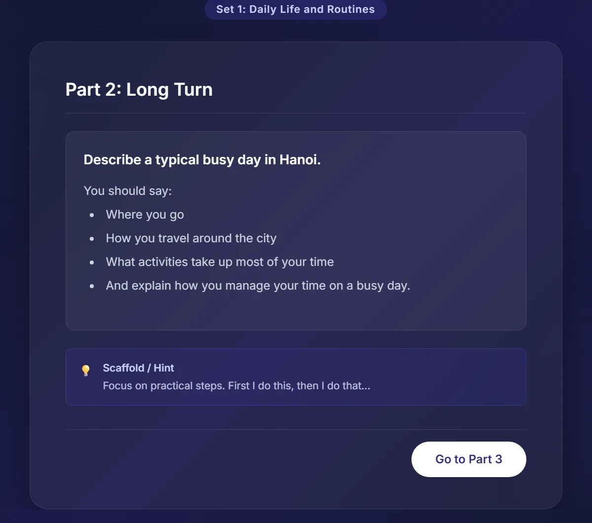

IELTS Classes in Đống Đa, Hanoi: How to Choose, Real Fees and the 2026–2027 Rules
The latest rules on IELTS for graduation and university admission in Vietnam, when to start, and what a month of classes really costs — before you pay for any course.
- Google Trends shows searches for “học IELTS” (learn IELTS) in Hanoi over the past year peaked in the week of 28 June–4 July 2026, right in exam and admission season. To have a certificate in time, start in the autumn.
- 2026 graduation exam: IELTS 4.0+ exempts students from the English paper (but doesn't count as a score of 10).
- 2026 university admission: bonus points for language certificates are capped at 1.5. A 2027 draft proposes removing them entirely.
- IELTS is not recommended for candidates under 16; younger students should build academic English first.
- IELTS scores exactly the skills of ELA (English Language Arts): academic reading, argument writing, speaking with evidence. A strong ELA foundation means preparing with real ability, not just tricks.
- HEC's Sun IELTS class: max 12 students, once a week for 2 hours, Writing and Speaking marked by a US-certified teacher, 260,000 VND per session (about 1.04–1.3 million VND a month).
In this article
IELTS after 2026: the new rules and whether it's still worth it
In 2026 Vietnam's Ministry of Education tightened how IELTS can be used in admissions, and many parents are wondering whether to continue. First, here is what is actually in force.
1. Graduation exam: English paper exemption with IELTS 4.0+
In the 2026 high-school graduation exam, students with IELTS 4.0 or above (along with 21 other language certificates) were exempt from the foreign-language paper for graduation. Crucially, the exempted subject does not count as a score of 10 — so a student who wants to apply to university using graduation-exam scores in a subject group that includes English still needs to sit the paper.
2. University admission 2026: bonus points capped at 1.5
Under the 2026 university admission rules (issued 15 February 2026), bonus points for language or international certificates are capped at 1.5, and all bonus points combined cannot exceed 3 out of 30. Universities can only add the bonus if the student has not already converted the certificate into an English subject score — the same achievement can't count twice.
3. 2027 draft: proposal to remove language-certificate bonus points
A draft amendment to the admission rules, under consultation in September–October 2026, proposes that from 2027 students may no longer receive bonus points for IELTS certificates or academic competition awards. It is a draft, not a final regulation.
Don't build an admission strategy around IELTS bonus points. Treat IELTS as a conditional advantage and watch for the official 2027 rules. The safest plan is still real English ability — useful for graduation, university and study abroad alike.
So is IELTS still worth it?
We think so — but for different reasons than before. IELTS remains a widely recognized measure for study abroad, scholarships, joint programs and many workplaces. More importantly, preparing for IELTS properly trains exactly the academic skills university demands: reading long texts, writing an argument, defending a point with evidence. What to avoid is cramming purely for bonus points — that value is shrinking every year.
What grade should students start IELTS?
Under the IELTS registration terms, the test is open to everyone but not recommended for candidates under 16. Most institutions also only accept IELTS results for two years from the test date, so testing too early can leave a certificate expired just when it's needed.
| Stage | What to focus on |
|---|---|
| Primary | An ELA foundation in all four skills, a reading habit, short presentations. No IELTS drills yet. |
| Grades 6–8 | Academic grammar, multi-paragraph writing with a thesis, longer informational reading, debate. |
| Grade 9 | Balance with the Grade 10 entrance exam (in Hanoi for 2026–2027, a foreign language is the third subject); start getting familiar with IELTS task types. |
| Grades 10–12 | Structured IELTS preparation by skill; take the test at a time that fits graduation and admission plans. |
At HEC, younger students follow the ELA pathway — high achievers take Jupiter (Grades 3–4) and SKY 1 (Grades 5–6) — then the academic writing class Sanrio Grade 6, before moving into the Sun IELTS class. See also: What is ELA, and why it underpins IELTS.
6 things to check in an IELTS class
Ask every center these six questions — we've put HEC's answers underneath so you have a benchmark.
1. Who marks your child's Writing and Speaking?
These two skills only improve with regular marking against the band descriptors. Ask who marks, how often, and whether feedback is written or just a score.
At HEC: a teacher with a New Jersey (USA) teaching certificate marks against the band descriptors, with spoken and written feedback.
2. Class size and speaking turns per lesson
Speaking needs real speaking time. The bigger the class, the fewer turns each student gets. Ask for the maximum class size as a number.
At HEC: no more than 12 students.
3. Mock tests: how often, and all four skills?
Regular mock tests under exam conditions measure progress and train time management. A mock is only worth it with detailed feedback.
At HEC: two section mocks and two full mocks in every 12-week cycle, plus the class's own Speaking mock-test tool.
4. Does the schedule fit around school?
For high-school students, a manageable, consistent schedule usually beats an intense one that gets abandoned halfway.
At HEC: once a week for 120 minutes, Sunday evenings 19:15–21:15.
5. How are fees charged, and what are the conditions on any “guarantee”?
Ask whether you pay the whole course upfront or monthly, and what the pause policy is. If a center offers a score guarantee, read the conditions carefully (attendance rate, test deadline and so on).
At HEC: 260,000 VND per session, billed only for sessions held, nothing paid upfront. We don't sell score guarantees; a 0.5-band gain in 12–16 weeks is a learning target.
6. Does the class build real academic skills, or just test tricks?
Tricks can lift a score in the short term, but higher bands in Writing and Speaking demand real reasoning: reading long texts, building an argument, defending it with evidence. Those are English Language Arts skills — see What is ELA?
At HEC: the Sun class is built on an ELA foundation — academic reading, argument writing with evidence, and Part 3 practiced like a debate.
IELTS prep options for students, compared
Rather than compare brand names, compare models. Most families choose between the five options below. The HEC column is what we publish and you can check in class; the other columns describe common models, not any specific center.
| Aspect | HEC – Sun IELTS class | Large IELTS chain | Intensive crash course | One-to-one tutor | Online self-study & apps |
|---|---|---|---|---|---|
| Class size | Max 12, published | Varies; ask for a number | Varies | 1 student | No class |
| Who marks Writing & Speaking | A US-certified teacher, against the band descriptors, with written feedback | Depends on each class's teacher | Depends on the program | Depends on the tutor | Automated or no marking |
| Schedule | Once a week × 120 min, fits around school | Many slots, many campuses | Often 2–3 sessions a week or more | Flexible | Self-paced |
| Foundation | Built on ELA: academic reading, argument writing, discussion | Focus on question types and strategy | Focus on question types and test tricks | Depends on the tutor | Disconnected exercises |
| Mock tests | Section and full mocks with feedback; own Speaking mock tool | Usually periodic mocks | Depends on the program | Depends on the tutor | Self-marked sample tests |
| Fees | 260,000 VND per session, billed per session held | Usually per course; quoted in consultation | Usually per course | Per hour, higher than a group class | Subscription, low cost |
← Swipe to see the full table →
The columns other than HEC describe common models in the market, not any particular center; each one may differ. Use the six questions above to ask directly.
HEC – Sun IELTS class
No. 25, Alley 242 Láng Street, Đống Đa Ward · Zalo 0975 679 889
- A small class of at most 12, once a week for 2 hours — a pace that fits around high school.
- A teacher with a New Jersey (USA) teaching certificate marks Speaking and Writing against the band descriptors.
- An ELA foundation: academic reading, argument writing with evidence, discussion run like a debate — not just test tricks.
- A full four-skill diagnostic at the start sets an individual band target; every lesson includes timed tasks.
- Fees published per session, nothing paid upfront; the center is licensed by the Hanoi Department of Education and Training.
A good fit if: your child needs a manageable schedule, close feedback in a small class, and you want transparent monthly costs.
Is the Sun class right for your child?
| If your child… | At HEC |
|---|---|
| Is in high school and needs a manageable schedule (once a week) | Sun IELTS class |
| Needs close feedback on Writing and Speaking in a small class | Sun IELTS class |
| Is in Grades 5–9, too young for the IELTS test | Build the ELA foundation: SKY 1, Sanrio Grade 6 |
| Wants transparent monthly fees | Every HEC class |
What IELTS classes cost per month
This is the most-searched IELTS question in Hanoi. For HEC's Sun class the maths is simple: 260,000 VND per 120-minute session, once a week.
| Period | Sun IELTS class fee |
|---|---|
| A month with 4 sessions | 1,040,000 VND |
| A month with 5 sessions | 1,300,000 VND |
| 12-week cycle (12 sessions) | 3,120,000 VND |
| Per teaching hour | 130,000 VND |
Fees are billed for sessions actually held each month, with no upfront course payment and currently no book fees.
Don't forget the test fee
The test fee is paid to the test organizer and isn't part of tuition. From the British Council's fee table:
| Fee | Amount |
|---|---|
| IELTS test | 4,664,000 VND |
| IELTS for UKVI (UK visas) | 5,252,000 VND |
| IELTS One Skill Retake | 2,940,000 VND |
| Enquiry on results (remark) | 2,268,000 VND |
- Convert to a price per teaching hour, not just the course total.
- Ask whether mock tests, materials and marking are included.
- Read the pause, refund and “guarantee” conditions carefully.
- Put the cost next to the class size and how many Writing/Speaking tasks get marked each week.
Inside HEC's 12-week Sun IELTS class
This roadmap is published on the Sun IELTS class page:
- Week 0 — Diagnostic
A full test across all four skills; an individual band target for every student. - Weeks 1–4 — Fix the weakest skill
Focus on the weakest sub-skill; timed micro-tasks every lesson; vocabulary-notebook routines. - Weeks 5–8 — Integrate skills
Integrated-skills practice; two partial mocks with spoken and written feedback. - Weeks 9–12 — Full mocks
Two full mock tests; targeted drills; guidance on booking the real test. - After the course — Maintenance
A maintenance plan and a recommended mock-test schedule.
Completion criteria: a Task 2 essay of 250+ words in 40 minutes with a clear position and two body paragraphs; a coherent 3–4 minute speaking interview; a target band of 5.5–7.0 and a 0.5-band gain within 12–16 weeks for students who follow the full program. These are learning targets, not score guarantees.
The class's Speaking mock-test tool
HEC built its own Speaking mock-test tool for the Sun class, with 10 topic sets drawn from contexts Vietnamese students know: daily life, home, leisure, travel, food, education, work, health, shopping and the environment. Each set covers Part 1, Part 2 (a cue card with a planning hint) and Part 3 (discussion questions, including ones that ask students to propose and create).

Get a free IELTS level check
A short diagnostic to see your child's current band and how long it should take to reach the target — before you commit to any course.
Message on Zalo: 0975 679 889 Call usFrequently asked questions
How much does a month of IELTS classes cost?
It depends on the center and how it charges. HEC's Sun IELTS class meets once a week for 120 minutes at 260,000 VND per session — about 1,040,000–1,300,000 VND a month (4–5 sessions), billed for sessions actually held.
How much is the IELTS test fee in Vietnam in 2026?
According to the British Council's fee table, the IELTS test costs 4,664,000 VND; IELTS for UKVI costs 5,252,000 VND; and the IELTS One Skill Retake costs 2,940,000 VND.
What IELTS score exempts a student from the English paper in the graduation exam?
In Vietnam's 2026 high-school graduation exam, students with IELTS 4.0 or above were exempt from the foreign-language paper for graduation. The exemption does not count as a score of 10, so students who want to use graduation-exam scores with English for university admission still need to sit the paper.
How many bonus points does IELTS give for university admission?
Under the 2026 admission rules, bonus points for language certificates are capped at 1.5, and only apply if the certificate was not already converted into the English subject score; total bonus points cannot exceed 3 out of 30. A draft for 2027 proposes removing bonus points for language certificates, but it is not yet official.
What grade should a student start IELTS?
Under the IELTS registration terms, the test is not recommended for candidates under 16. Students in Grades 6–9 should build academic English first; Grades 10–12 are the right stage for structured IELTS preparation and taking the test.
How long does it take to improve by 0.5 band?
It depends on the starting level and self-study time. HEC's Sun class targets a 0.5-band gain within 12–16 weeks for students who follow the full program; this is a learning target, not a score guarantee.
Why build an ELA foundation before IELTS?
IELTS scores exactly the skills ELA (English Language Arts) trains: reading long academic texts, writing an argument with reasons and evidence, presenting and discussing an issue. Students with a strong ELA foundation prepare for IELTS with real ability rather than just test tricks — and that ability carries on into university. At HEC, the ELA pathway (Jupiter, SKY 1, Sanrio Grade 6) leads straight into the Sun IELTS class.
Where can I take IELTS classes in Đống Đa?
Happy English Club (HEC) runs its Sun IELTS class at No. 25, Alley 242 Láng, Đống Đa Ward: no more than 12 students, once a week for 120 minutes, 260,000 VND per session, with Writing and Speaking marked against the band descriptors by a teacher with a New Jersey (USA) teaching certificate. Wherever you go, ask about class size, who marks the work, the schedule and how fees are charged.
Sources
- VnExpress — 22 language certificates exempting students from the 2026 graduation-exam language paper (12 Mar 2026, in Vietnamese).
- VnExpress — 2026 university admission rules tighten IELTS bonus points (15 Feb 2026, in Vietnamese).
- Giáo dục Việt Nam — On the draft 2027 admission rules (28 Sep 2026, in Vietnamese).
- Nhân Dân — Hanoi picks a foreign language as the third Grade 10 exam subject for 2026–2027 (29 Jan 2026, in Vietnamese).
- British Council — IELTS test fees and other services (in Vietnamese).
- IDP IELTS — IELTS registration terms and conditions (age recommendation).
- Happy English Club — What is ELA? ELA vs ESL (research on how languages are learned).
- Google Trends — searches for “học IELTS”, Hanoi, Oct 2025–Oct 2026.